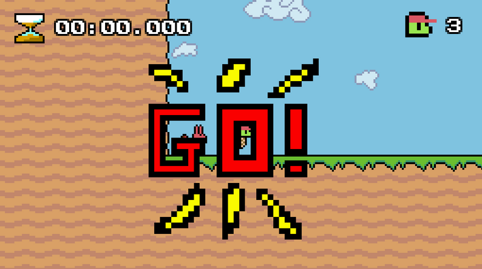
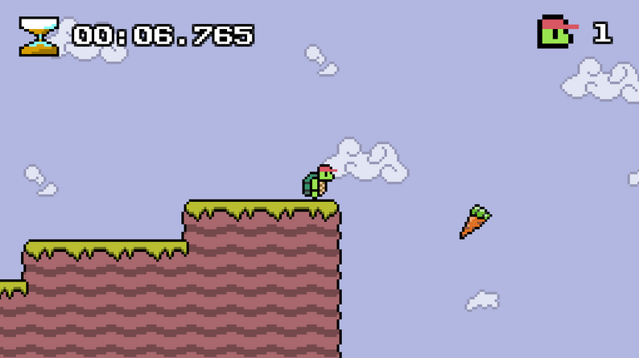
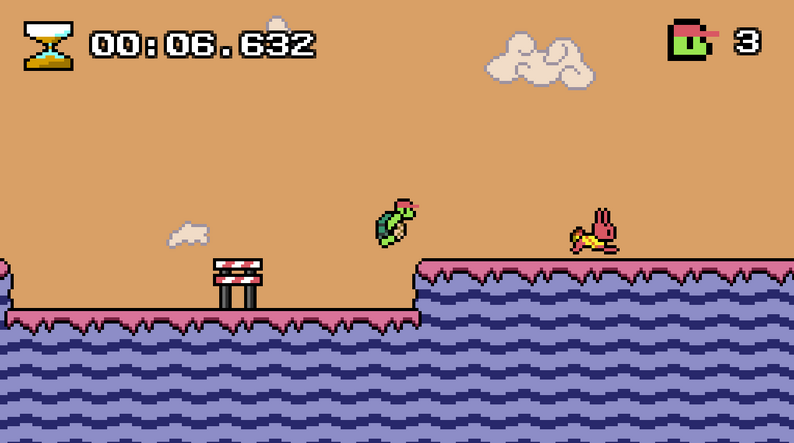

It's a racing game and a 2D platformer. Try to beat the hare in the 3 races that make up the game to win. If you lose 3 times, the hare will have won.
During the races there will be obstacles which you have to jump through. There will be also carrots which will give you a short boost.
I developed the carrots functionality to boost the player for a moment. System is scalable to accommodate any new items that may be developed.
I've created the game system physics which involve gravity, jump forces and platforms collisions.
I designed the third level of the game. The aim was to give more obstacles to jump and give and advantage to the hare.